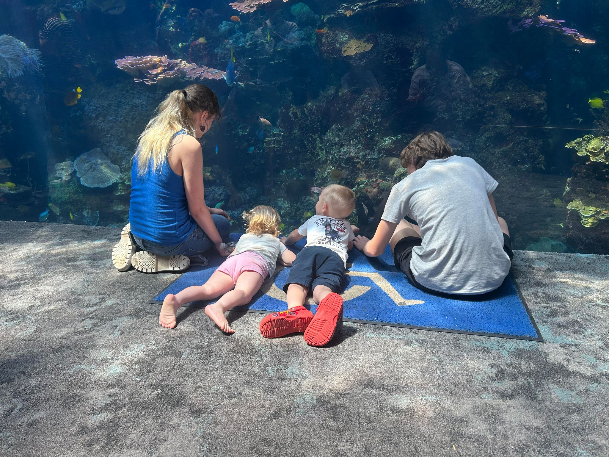

Hello! My name is Jessica McQueen, and I am so excited to begin the 2024-2025 school year! Our class page will showcase student work, contact information, and resources for post-secondary opportunities for you and your child! The homepage will be used to post information about myself so you can get to know a little bit about your child's teacher, any upcoming fieldtrips, events at school, and some information about what your child will be doing this week in school.
I am a 9-12th grade teacher for students with Moderate to Severe Disabilities. I teach Math, English, Science, Social Studies, Career, and Life Skills. I am a Special Olympics Coach for both track and bowling, and if you are interested, I would love to have your child on my team! I have been a teacher since 2020. I love to read, sew, and be outdoors, especially if it involves fishing! I have 2 cats, Frankie and Roscoe, 2 dogs, Bailey and Baxter 2 children, Zoey and Zaniel, and a husband, Ryan. I love children of all ages, I have many nieces and nephews on my husband's side of the family, but on my side, I have one of each, Henrey and Havilah. I am from Irvine, KY and have lived here all my life. My two children are both in high school and participate in Guitar and Lacrosse. I love music and sports as well, so it makes the extracurricular activities extra special!
Welcome back to school! I hope each of you enjoyed summer break with your kiddos and are ready to get back into the swing of things. This week, in the classroom, we are going to be going over the rules and expectations for each class, doing welcome back to school activities, and setting up our classroom store to prepare for the beginning of the year sales. Coming up in a few weeks, we are going to take our first Community Based Instruction trip to the Horsepark in Lexington to learn about the history of horse racing. The High School's webpage has a calendar of all events taking place throughout each month at ECHS. I love ECHS and all they have to offer to our students.
ECHS
offers many clubs and extracurriculars for students to select from.
